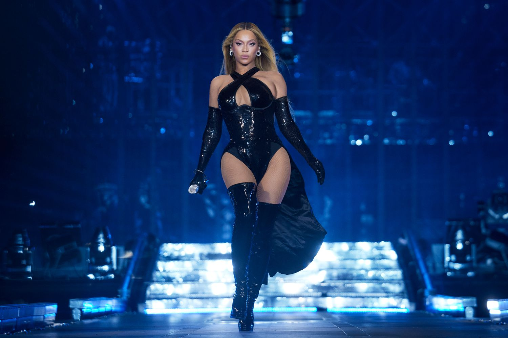

Beyoncé Giselle Knowles-Carter (/biˈɒnseɪ/ ⓘ bee-ON-say;[6] née Knowles; born September 4, 1981)[7] is an American singer, songwriter, and businesswoman. Dubbed "Queen Bey", she is regarded as a prominent cultural figure of the 21st century. Throughout her two-decade career, Beyoncé has been recognized for her distinctive vocal range and live concert performances.[8] Rolling Stone named her the world's greatest living entertainer and one of the greatest vocalists of all time.[9]
Beyoncé's maternal grandparents, Lumis Albert Beyincé and Agnéz Deréon (daughter of Odilia Broussard and Eugène DeRouen),[24] were French-speaking Louisiana Creoles, with roots in New Iberia;[25][24][26] She is a descendant of Acadian militia officer Joseph Broussard, who was exiled to French Louisiana after the expulsion of the Acadians, and of the French military officer and Abenaki chief Jean-Vincent d'Abbadie, Baron de Saint-Castin.[20][27] She has additional Breton heritage. Beyoncé's fourth great-grandmother, Marie-Françoise Trahan, was born in 1774 in Bangor, located on Belle Île, France. Trahan was a daughter of Acadians who had taken refuge on Belle Île after the Acadian expulsion. The Estates of Brittany had divided the lands of Belle Île to distribute them among 78 other Acadian families and the already settled inhabitants. The Trahan family lived on Belle Île for over ten years before migrating to Louisiana, where she married a Broussard descendant.[28] Beyoncé researched her ancestry and discovered that she is descended from a slave owner who married his slave.[29] Her mother is also of distant Irish, Jewish, Spanish, Chinese and Indonesian ancestry.[30][31][32][25] Beyoncé also has Belgian ancestry from Hainaut Province, Wallonia and is related to a former mayor of Froidchapelle, Belgium.[33][34]
Beyoncé was raised Methodist and attended St. John's United Methodist Church in Houston.[35][36] As her mother's family was Catholic, her family attended Midnight Mass at St. Mary of the Purification Catholic Church on Christmas Eve.[37] She went to St. Mary's Catholic Montessori School in Houston and enrolled in dance classes there.[38] Her singing ability was discovered when dance instructor Darlette Johnson began humming a song and Beyoncé finished it, able to hit the high-pitched notes.[39] Beyoncé's interest in music and performing continued after winning a school talent show at age seven, singing John Lennon's "Imagine" to beat 15/16-year-olds.[40][41] In the fall of 1990, Beyoncé enrolled in Parker Elementary School, a music magnet school in Houston, where she performed with the school's choir.[42] She also attended the High School for the Performing and Visual Arts[43] and later Alief Elsik High School.[19][44] Beyoncé was also a member of the choir at St. John's United Methodist Church where she sang her first solo and was a soloist for two years.[35][45]
When Beyoncé was eight, she met LaTavia Roberson at an audition for an all-girl entertainment group.[46] They were placed into a group called Girl's Tyme with three other girls, and rapped and danced on the talent show circuit in Houston.[47] After seeing the group, R&B producer Arne Frager brought them to his Northern California studio and placed them in Star Search, the largest talent show on national TV at the time. Girl's Tyme failed to win, and Beyoncé later said the song they performed was not good.[48][49] In 1995, Beyoncé's father, Matthew, resigned from his job to manage the group.[50] The move reduced the family's income by half, and Beyoncé's parents were forced to sell their house and cars and move into separated apartments.
Mathew cut the original line-up to four and the group continued performing as an opening act for other established R&B girl groups.[46] The girls auditioned before record labels and were finally signed to Elektra Records, moving to Atlanta Records briefly to work on their first recording, only to be cut by the company.[19] This put further strain on the family, and Beyoncé's parents separated. On October 5, 1995, Dwayne Wiggins's Grass Roots Entertainment signed the group. In 1996, the girls began recording their debut album under an agreement with Sony Music, the Knowles family reunited, and shortly after, the group got a contract with Columbia Records with the assistance of Columbia talent scout Teresa LaBarbera Whites.
Beyoncé has received numerous awards and is the most-awarded female artist of all time.[486] Having sold over 200 million records worldwide (a further 60 million additionally with Destiny's Child), Beyoncé is one of the best-selling music artists of all time.[487] The Recording Industry Association of America (RIAA) listed Beyoncé as the top certified artist of the 2000s decade, with a total of 64 certifications.[488][489] In 2009, Billboard named her the Top Female Artist and Top Radio Songs Artist of the Decade.
